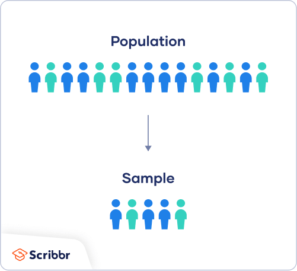

library(dplyr)
library(glue)
library(ggplot2)
library(rmarkdown, include.only = "paged_table")
theme_set(theme_bw())
.cap <- "Michal Lauer | laumi.me"Unbiased Estimators: Understanding their practical application
When it comes to statistical analysis, unbiased estimators play a critical role in obtaining accurate results. But what exactly is an unbiased estimator, and how can it be applied in practical situations?
too long; didn’t read
Unbiased estimator -\(E(\hat{\theta}) = \theta\)
Asymptotically unbiased estimator - \(\lim_{n \to \inf} E(\hat{\theta}) = \theta\)
Biased estimator - \(E(\hat{\theta}) \neq \theta\)
In order to have an unbiased estimator, the sample *must be representative of the population.**
When to estimators are unbiased, they are compared using other characteristics, such as variance, consistency, or efficienty.
In the real world, unbiasedness practitcally does not exists because it is impossible to get a perfectly representative sample.
Series introduction
This is a part of my series about estimators and their properties. If you don’t understand some concepts or would like to know, I fully suggest starting from the beginning!
Blog preparation
Motivation
Unbiased estimators play a vital role in obtaining accurate statistical results, but understanding how they work can be complex. In this blog, we’ll explain the concept of unbiasedness and its importance in statistical analysis. We’ll then dive into how unbiased estimators can be applied through mean. By the end of this blog, you’ll have a solid understanding of how to use unbiased estimators in your statistical analyses and be equipped with the knowledge needed to obtain reliable results. Whether you’re a student, researcher, or simply interested in statistical analysis, this blog is for you.
Unicorn for every student!
Imagine you are a director of an unspecified magician university, and some company called UnicornRiders™ offers you a partnership. They will give to every student of your school a discount for their unicorn rides - and as a bonus, you will get a donut for every 100th student who uses the code UnicornsAreReal10 when registering for a ride! As a huge fan of donuts unicorns, you are eager to accept the deal and announce to everybody what a great director you are. This will also attract new students to the upcoming university entrance exams. You meet with the president of UnicornRiders™ and as you are about to sign the paperwork, he takes the paper from you and asks:
Before we sign this deal, what is the mean (average) age of your students?
As you have not (understandably) met with every student of your magical school, you tell him you don’t have the number and will get back to him in a week. You both shake hands and schedule a meeting for the next Friday.
31. 02. 3023
As you rush back to your school, you join the school’s Slack server and call your secretary. When students apply to your school, they have to fill out a questionnaire specifying their age, and your secretary should be able to pull out those records and average them. As you explain the situation to your dedicated colleague, she blunts, looks down, and starts to mumble. After a couple of minutes, she spits out that the field where students were supposed to fill out their date of birth was, in fact, just a text. To your surprise, some students were born in years \(\pi\), -1, YouWouldLikeToKnow or, - the old-age classic - AskYourMom.
Because you do not know what to do, you rush to your local professor of statistics - Mr. Tiny. As you explain the problem to him, he smiles and tells you not to worry. His cheeky smile and strange hand gestures worry you - How can you not worry? How do you get your donuts?
Estimating
Enough of the charades; let‚Äôs get to business üòé. Imagine that you would like to know the mean age of every man in New York. It would be impractical, expensive, and outright impossible to ask everybody their age. Even if possible, you would need to ask every person simultaneously because people will get older, have birthdays, or might die. There are a lot of other issues that would rise, such as:
- How to define a “New Yorker”?
- Who would ask all of these people?
- When should everybody be asked, since they can have jobs or school?
This is where statistical inference comes in.
Statistical inference1 generally tries to draw conclusions about the whole population based on a sample. It uses methods such as hypothesis testing, confidence intervals, or regression analysis. One of these methods is estimation.

Estimates are created with estimators, which have their own properties. A common example is the sample mean, which estimates the population mean. If you take a sample of students and calculate their mean age, the computed sample mean is an estimate of the population mean.
Naming conventions
The population has parameters, while samples have estimates.
There’s no sample like the other
As mentioned, an estimate (\(\hat{\theta}\)) is obtained from a sample. An important thing is that the sample must represent the whole population. Imagine that you wanted to know the average time someone has cheated in a relationship, how long they have been smoking, or whether they have ever been in jail. These questions are sensitive, and responders might lie or not answer. The interviewer and the sampling method have to adjust accordingly to this issue. Other issues that may arise are:
- ambiguous questions,
- answers which are hard to measure,
- unbalanced population, or
- hierarchical structure in the population.
The sampling strategies and representativeness theory surpass this blog post by far. Luckily, Mr. Thompson wrote a great book2 on this topic which I can strongly recommend. For this blog, we will simplify our assumptions of representativeness to a single statement: the sample is taken randomly.
Unbiasedness…
As mentioned earlier, estimators have their own properties. One of these properties is unbiasedness.
Unbiased estimators
Unbiased estimators, on average, do not overestimate or underestimate their population counterparts.
We’ll use some mathematics to express this assumption in a more general way. Let’s have a population parameter \(\theta\). We say that the estimate of \(\theta\), called \(\hat{\theta}\) is unbiased3 if
\[ E(\hat{\theta}) = \theta. \]
A great example of an unbiased estimator is the sample mean. Imagine that you take a representative sample of size \(n\) of all nursing home residents. Every age collected is denoted by \(x_i; i = 1, \dots, n\). The sample mean, denoted as \(\bar{x}\), is unbiased, because
\[ E \left( {\hat{\theta}} \right) = E \left( {\bar{x}} \right) = E \left( \frac{\sum_{i=1}^n x_i}{n} \right) = \frac{1}{n} E \left(\sum_{i=1}^n x_i \right) = \frac{1}{n} n\mu = \mu = \theta. \]
Here, the estimator \(\hat{\theta}\) is the sample mean \(\bar{x}\). The population parameter \(\theta\) is the population mean \(\mu\). The value calculated, let’s say 70.2, would be the estimate.
…and bias…
On the other hand, when an estimator is biased, it tends to overestimate or underestimate the population parameter.
\[ E(\hat{\theta}) \neq \theta \]
Imagine that you are a crazy statistician who wants to burn the world and to calculate the sample mean, you use a special mean
\[ \bar{x}_{S} = \frac{1}{n} \sum_{n=1}^i x_i + 256/n, \]
where \(256/n\) is your super-secret-crazy coefficient. Now you want to know if of your new sample mean \(\bar{x}_s\) is unbiased or not.
\[ E \left( {\bar{x}_S} \right) = E \left( \frac{\sum_{i=1}^n x_i}{n} + 256/n \right) = \frac{1}{n} E \left(\sum_{i=1}^n x_i \right) + E(256/n) = \frac{1}{n} n\mu + 256/n = \mu + 256/n \]
This means your mean \(\bar{x}_S\) overestimates the true population mean \(\mu\), on average, by \(256/n\). But you are also a great statistician and want to know what happens with a sample that gets bigger and bigger - enter asymptotic unbiasedness!
… and bias in the infinite
Asymptotic unbiasedness means that as sample size \(n\) goes to \(\infty\), the bias goes to zero and estimator \(\hat{\theta}\) is unbiased.
\[ \lim_{n \to \infty} E(\hat{\theta}) = \theta \]
Going back to our statistician and his super-secret-crazy coefficient, it can be seen it is biased but asymptotically unbiased simultaneously.
\[ \lim_{n \to \infty} (\mu + 256/n) = \mu \]
Another property which can be derived from this fact is that the estimate will be, on average, off from the real value by the bias itself.
If you, as a crazy statistician, took a sample of size \(n = 128\), you would overestimate, on average, the true population mean by 2. However, if you took a sample large enough, the bias would be really small, and your estimate would really close to the population parameter.
Warning
An asymptitcally unbiased estimator will never be unbiased as you can never take a sample of size \(\infty\). This property tells you that as you increase the sample size, the bias is so small that it can be ignored.
Limitations
Unbiasedness, like any other thing, has its limitations. The main thing that you, as a statistician, need to look for is its variance. Imagine that you have an estimator \(\hat{\theta}\) which is unbiased but has a variance of \(10^8\). This means that the estimate produced by the estimator is, on average correct, but it is, on average, off by \(10^8\). If you could pick between an unbiased estimator with high variance and biased estimator with a small variance, it is reasonable to use a biased estimator. This is called the bias–variance tradeoff4.
Another important thing is if the estimator is consistent and efficient. These properties deserve a post on it. Luckily for you, they are on my roadmap! In short, consistency means that the estimator is more precise as \(n \to \infty\). Efficiency, on the other hand, states that the variance of an estimator is the smallest possible.
A final limitation that I will mention is representativeness. Take a moment and think - is it really possible to have an unbiased estimator? Can you really get a sample that fully represents the underlying population? Can you ensure that everybody has the same chance of ending up in a sample? Can you specify and define the population in question?
Unbiased estimators in practice
In practice, every estimator is biased because the requirements can’t be met. This is mainly compensated by a big sample size, which should push down the potential bias. Since no estimator is unbiased, other properties - such as variance, consistency, or efficiency, are discussed in future blog posts.
Simulations
Thanks to our digital age, most of the stuff described above can be shown using statistical tools such as R. I will simulate all three types of estimators - unbiased, asymptotically unbiased, and biased estimators. But first, let’s see on a small sample that the core property described as unbiasedness is true.
Unbiasedness estimate
To showcase the unbiasedness of the mean, let’s create a small population of of size \(N = 7\) teachers where we want to know the average time they spend teaching each week in a single semester. In this example, we assume every teacher has a schedule for the whole semester.
teachers <- tibble(
teacher_id = 1:7,
hours_in_week = c(7,6,12,8,4,10,11)
)
paged_table(teachers)Out of all teachers (the population), we’ll consider a sample size of \(n = 3\). To check the unbiasedness, we’ll get all possible samples of size 3.
# Get all combinations
sample_hours <- combn(teachers$hours_in_week, 3)
# Get mean hours for every combination
sample_means <- colMeans(sample_hours)
# Combine the results
sample_table <-
rbind(sample_hours, sample_means) |>
t() |>
as_tibble(.name_repair = "minimal") |>
rename(hours1 = 1, hours2 = 2, hours3 = 3, sample_mean = sample_means) |>
mutate(sample_id = row_number()) |>
relocate(sample_id, .before = 1)
paged_table(sample_table)All generated samples and their mean can be seen in Table 2. This is why we chose rather a small sample and population. The total number of possible samples is given by \({N \choose n}\); in our case, it’s 35.
Expected value is what we would, on average, expect. To get the expected value of the sample mean, we need to average all the computed sample averages.
sample_average <- mean(sample_table$sample_mean)
popul_average <- mean(teachers$hours_in_week)The final statistics are:
- The expected value of the sample mean: 8.2857143
- Population mean: 8.2857143
We can see that the sample mean is, on average, equal to its population counterpart.
Biased estimate
Let’s get back to the crazy statistician example. We’ll do the exact same procedure to see if their mean is really biased, that is:
- We’ll create all possible samples,
- for every sample, calculate mean \(\bar{x}_S\),
- get the mean of all means \(\bar{x}_S\), and
- compare them to the population mean.
sample_crazy_average <-
# Get all possible samples of size n = 3
combn(teachers$hours_in_week, 3) |>
# Calculate crazy mean
apply(2, function(x) mean(x) + (256/length(x))) |>
# Average crazy mean
mean()The sample mean computed is 93.6190476, which is way above the population mean. But by how much does the crazy mean overestimate the true population mean?
If you remember the super-secret-crazy coefficient, it is the bias that overestimates the population parameter. Let’s see if it all adds up…
- Sample crazy mean: 93.6190476
- Sample bias: 85.3333333
- Population mean: 8.2857143
If you subtract the bias from the crazy mean, you’ll get the population mean! This is exactly what is meant by overestimates, on average. But what would happen with an infinitely large number of samples…?
Asymptotically unbiased
What would happen if we took a sample of size \(n\) many, many times from a much larger population? To test this, we can use simulations! In the figure below, we take many samples of size \(n\) to see what happens to the estimate. Remember, here we compute the crazy average.
# Reproducibility
set.seed(789)
# Population
population <- runif(2000, 5, 15)
# Maximum sample size
samples <- 500
n <- 128
# Vectors to store computed statistics
mean <- vector("double", samples)
# Compute statistics for every sample size i, i = 1, ..., r
for (i in 1:samples) {
sample <- sample(population, size = n)
mean[i] <- mean(sample) + 256/n
}
tibble(i = 1:samples,
mean = mean,
sample_mean = mean(mean),
real_mean = mean(population)) |>
ggplot() +
geom_hline(aes(yintercept = sample_mean,
color = glue("Mean of means ({round(sample_mean, 2)})")), linewidth = 1) +
geom_hline(aes(yintercept = real_mean,
color = glue("Real mean ({round(real_mean, 2)})")), linewidth = 1) +
geom_line(aes(x = i, y = mean), alpha = .8) +
scale_x_continuous(labels = scales::number_format()) +
scale_color_discrete(name = "Type of the mean") +
labs(
title = "The mean oscillates arounte the true population mean",
subtitle = "The bias is equal to 256/128 = 2",
x = "Number of samples", y = "Sample mean",
caption = .cap
)Figure 1 shows that the sample mean oscillates around the value 12.03. The real mean (computed from the population, which is rarely known) is 10.04. As we know from the previous text, the bias for the crazy average is \(256/n\), which in our case equals two! This shows that the mean of all means is, on average, the true population mean plus bias.
We can now look at what happens if the sample size increases until it equals to the population size. In this case, the sample is called a census. That’s because you are essentially not making any guesses or samples anymore - you are asking every person in the population!
# Reproducibility
set.seed(123)
max_size <- 2000
# Vectors to store computed statistics
mean <- vector("double", max_size)
bias <- vector("double", max_size)
# Compute statistics for every sample size i, i = 1, ..., r
for (i in 1:max_size) {
sample <- sample(population, size = i)
mean[i] <- mean(sample) + 256/i
}
tibble(i = 1:max_size,
mean = mean,
real_mean = mean(population)) |>
ggplot() +
geom_hline(aes(yintercept = real_mean), color = "#01bec4", linewidth = 1) +
geom_line(aes(x = i, y = mean), alpha = .8) +
scale_x_continuous(labels = scales::number_format()) +
coord_cartesian(ylim = c(10, 14)) +
scale_color_discrete(name = "Type of the mean") +
labs(
title = "The mean converges to the population man + bias",
subtitle = "Maximum sample size is cut at N = 2 000",
x = "Sample size", y = "Sample mean",
caption = .cap
)As \(n\) goes to \(N\), the sample mean converges to the real mean. At \(n = N\), the mean of all means is greater by \(256/2000 = 0.128\). This proves that the larger the sample, the less of a bias you will have (Figure 2). Finally, we’ll look at what happens when the sample size \(n\) goes really (not really) to infinity.
# Reproducibility
set.seed(789)
# Much larger Population
population <- runif(20000, 5, 15)
# Reproducibility
set.seed(456)
samples <- seq(1, 20000, by = 100)
# Vectors to store computed statistics
mean <- vector("double", length(samples))
# Compute statistics for every sample size i, i = 1, ..., r
for (i in 1:length(samples)) {
sample <- sample(population, size = i, replace = T)
mean[i] <- mean(sample) + 256/i
}
tibble(i = 1:length(samples),
mean = mean,
real_mean = mean(population)) |>
ggplot() +
geom_hline(aes(yintercept = real_mean), color = "#01bec4", linewidth = 1) +
geom_vline(aes(xintercept = 20000/100), color = "grey20") +
geom_line(aes(x = i, y = mean), alpha = .8) +
scale_x_continuous(labels = scales::number_format()) +
scale_color_discrete(name = "Type of the mean") +
labs(
title = "The mean converges asymptotically to the true population mean",
subtitle = "Vertical line denotes the maximum at N = 2 000",
x = "Sample size / 100", y = "Sample mean",
caption = .cap
)Here, we first increased the population size to 20 000. We want to investigate what happens as \(n \to \infty\), but we still have the limitation of the population size. On Figure 3, We see that the larger the sample, the smaller the bias. In the final sample (census), the bias equals to \(256/20000 = 0.0128\) - almost negligible.
About those unicorns…
Let’s get back to those unicorns (and donuts). After the university statistician tells you about unbiasedness and how it works, you realize that you can have an unbiased estimate of the mean student age. The only issue left to tackle is how to create a representative sample of students and get the answer before Friday.
Luckily - since you are all wizards - your statistician gets in touch with the local wizard of dark magic, who can get (peacefully, but persuasively) the correct age of any student who sits in his magical chair. With the help of Mr. Tiny, who creates a perfectly representative sample using his spell SampoPerfecto, they together interview 100 students out of all 50 000 students and record their age in an Exspell table.
N <- 50000 # Population size
n <- 100 # Sample size
set.seed(159)
population <- rnorm(N, 22.5, 5) # Generated population
set.seed(963)
sample <- sample(population, n) # Generated sample- Sample mean: 22.8022139
- (not known) Population mean: 22.5
After computing the mean age, you know that the unbiased estimate of mean age among your students is 22.8 years. You stand up and rush to the door for your donuts and sales coupons for unicorns while thanking Mr. Tiny for his great statistics work.
Precision
Notice that with a sample that represents only 0.2 % of the whole populatoin, we got a fairly decent estimate of the true population mean.
Footnotes
R session information
Session Info
─ Session info ───────────────────────────────────────────────────────────────
setting value
version R version 4.4.3 (2025-02-28)
os Ubuntu 24.04.2 LTS
system x86_64, linux-gnu
ui X11
language (EN)
collate C.UTF-8
ctype C.UTF-8
tz UTC
date 2025-06-15
pandoc 3.2 @ /opt/quarto/bin/tools/ (via rmarkdown)
quarto 1.5.56 @ /usr/local/bin/quarto
─ Packages ───────────────────────────────────────────────────────────────────
! package * version date (UTC) lib source
P dplyr * 1.1.4 2023-11-17 [?] RSPM (R 4.4.0)
P ggplot2 * 3.5.2 2025-04-09 [?] RSPM (R 4.4.0)
P glue * 1.8.0 2024-09-30 [?] RSPM (R 4.4.0)
P rmarkdown * 2.29 2024-11-04 [?] RSPM (R 4.4.0)
P sessioninfo * 1.2.3 2025-02-05 [?] RSPM (R 4.4.0)
[1] /home/runner/work/laumi.me/laumi.me/renv/library/linux-ubuntu-noble/R-4.4/x86_64-pc-linux-gnu
[2] /home/runner/.cache/R/renv/sandbox/linux-ubuntu-noble/R-4.4/x86_64-pc-linux-gnu/17ee7825
* ── Packages attached to the search path.
P ── Loaded and on-disk path mismatch.
──────────────────────────────────────────────────────────────────────────────Feel free to comment below your thoughts! If you have found some things unclear, misleading, or incorrect, feel free to let me know and I will work on it as soon as possible.